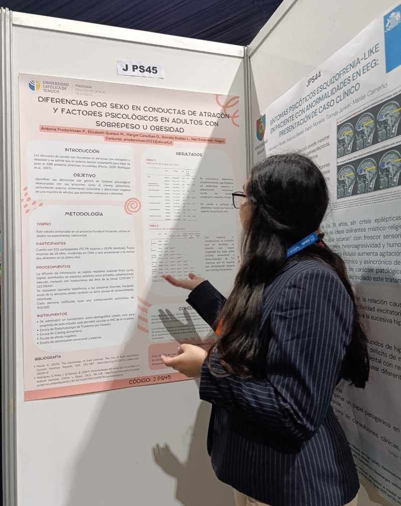
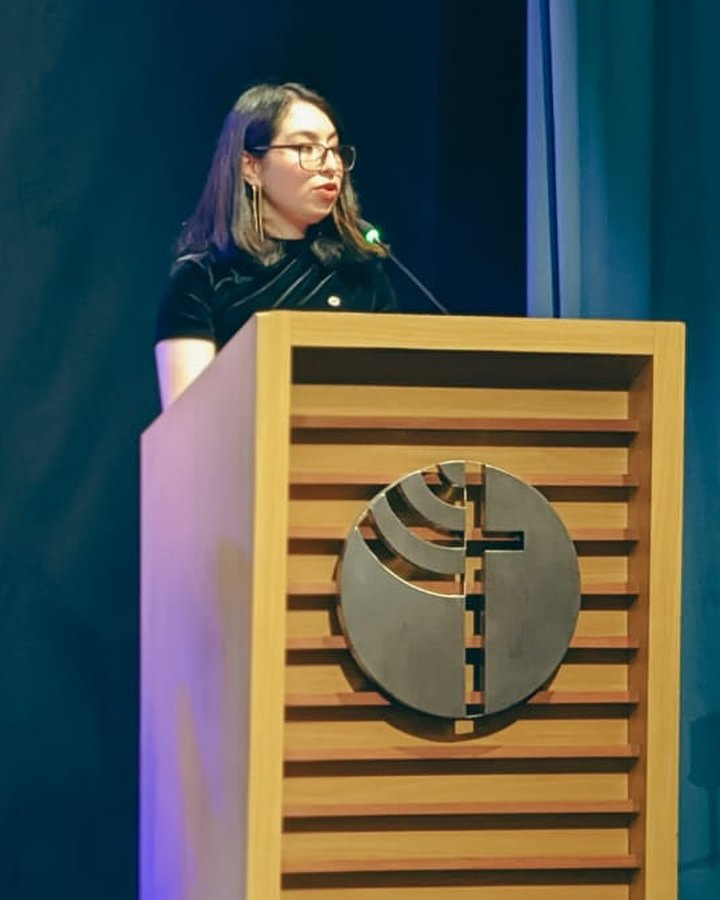
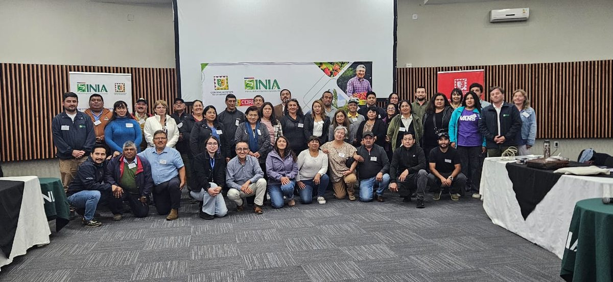
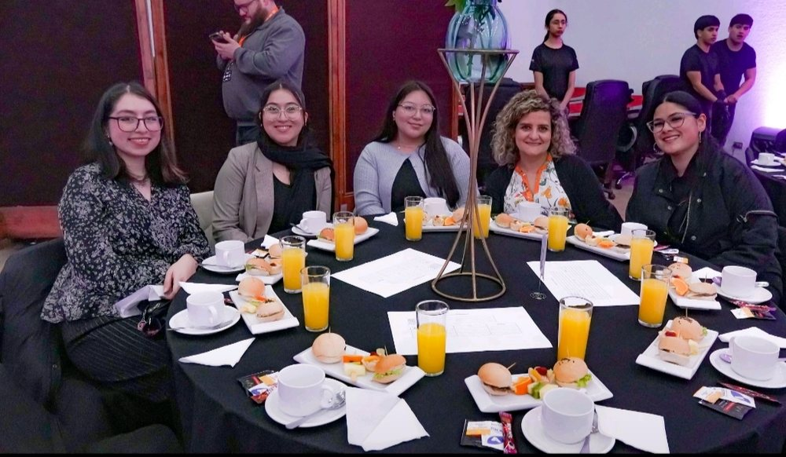
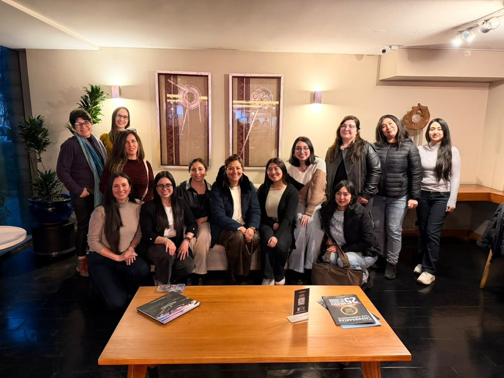

Clínica y evaluación
Entrevistas estructuradas, psicodiagnóstico, levantamiento de información clínica e informes psicológicos.
Psicóloga con experiencia en evaluación psicológica, entrevistas clínicas y acompañamiento, con rigor técnico y compromiso ético.
Entrevistas estructuradas, psicodiagnóstico, levantamiento de información clínica e informes psicológicos.
Evaluación de conductas y competencias, perfiles de cargo y perfiles de emprendedores.
Psicoeducación, reinserción social, convivencia, prevención y campañas para la comunidad.
Trabajo en proyectos de investigación universitaria, encuestas estandarizadas y gestión de datos.
Diseña material psicoeducativo adaptado a personas en reinserción social e imparte sesiones sobre habilidades socioemocionales, autocuidado y prevención de conductas de riesgo.
Aplica entrevistas estructuradas, evalúa la elegibilidad de usuarios y sistematiza la información recabada.
Evaluó conductas y competencias en empresarios agrícolas, elaboró perfiles de emprendedores, presentó resultados para INIA Carillanca y desarrolló perfiles de cargo.
Realizó mentorías a estudiantes en práctica, diseñó material de apoyo y revisó informes de evaluación psicológica.
Planificó actividades preventivas y campañas para la comunidad universitaria, y gestionó las redes del proyecto "Mirada a nuestros cuerpos".
Realizó encuestas telefónicas estandarizadas y gestionó datos para los procesos de investigación.
Entregó apoyo docente y tutorías, coordinó actividades académicas y revisó evaluaciones.
Diseñó e implementó estrategias de cohesión grupal, junto con planes de convivencia e integración.

Diferencias por sexo en conductas de atracón y factores psicológicos en adultos con sobrepeso u obesidad.
Coautora de este estudio con 322 participantes, enmarcado en un proyecto Fondecyt de Iniciación de la Universidad Católica de Temuco y presentado como póster.



